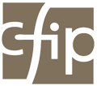

3 Coaches
3 styles
Certifiés

Claire Moallic
Après 15 ans d’expérience professionnelle, les différents postes que j’ai occupés (de la recherche et développement au management d'équipe) m’ont permis de réfléchir à mes valeurs pour aligner mon chemin avec qui je suis.
Le métier de formatrice m’a ensuite permis de conjuguer deux passions : l’humain et les techniques scientifiques. Aider les autres dans leur parcours professionnel est devenu une évidence.
Les parcours de vie, professionnelle et personnelle, ne sont pas linéaires aujourd’hui. Cela ouvre des interrogations sur le sens, le fil rouge, ses valeurs, et touche à l’identité. Aussi je propose de vous accompagner pour toutes les questions autour de l’orientation professionnelle et de vie.
Karin Latreille
“L’individu est le produit d’une histoire dont il cherche à devenir le sujet.”
Passionnée de lecture et d’écriture, cette citation de Vincent de Gaulejac illustre ma vision et ma méthode de coaching. Au travers de l’écoute active et de questionnements puissants, le coach accompagne son.a client.e dans l’appréhension et la réinterprétation de son histoire pour en faire quelque chose de neuf et adapté à son présent.
Anthropologue de formation, ayant vécu et travaillé dans une dizaine de pays différents, je suis particulièrement sensible à la contextualisation culturelle de l’expérience du.e la coaché.e. Mon parcours en RH et dans le secteur de l’humanitaire, mon bilinguisme Anglais-Français m’ouvrent aux questions de l’ici et de l’ailleurs, le besoin d’aventure et de stabilité, la nécessité de vivre dans l’urgence du présent tout en construisant le futur.
Benoît Debande
Après une formation universitaire de docteur en médecine, suivie d’une autre en informatique, j’occupe depuis plus de 30 ans des postes de direction dans le secteur hospitalier. Ces différentes fonctions qui vont de la direction informatique à la direction générale en passant par la direction médicale, exercées en Belgique mais aussi à l’étranger, me permettent de bien appréhender la richesse et la spécificité du monde hospitalier tout en étant quotidiennement confronté aux réalités du management dans un milieu de professionnels.
Voici quelques années, j’ai ressenti le besoin de revenir à ma vocation première de médecin généraliste, et en retrouver tant la richesse du dialogue singulier que le contact interpersonnel. J’ai donc entrepris une formation de 2 ans en hypnose Ericksonienne que j’ai terminée en 2020 et en parallèle une formation en coaching au CFIP que je terminerai fin 2020. Suivra en 2021 une formation en PNL.
Avec mon expérience professionnelle et les outils dont j’acquiers chaque jour un peu plus la maîtrise, je propose au coaché de l’accompagner dans son cheminement personnel, que ce soit dans un contexte professionnel, familial ou individuel.
1 place de Bruxelles
Limal